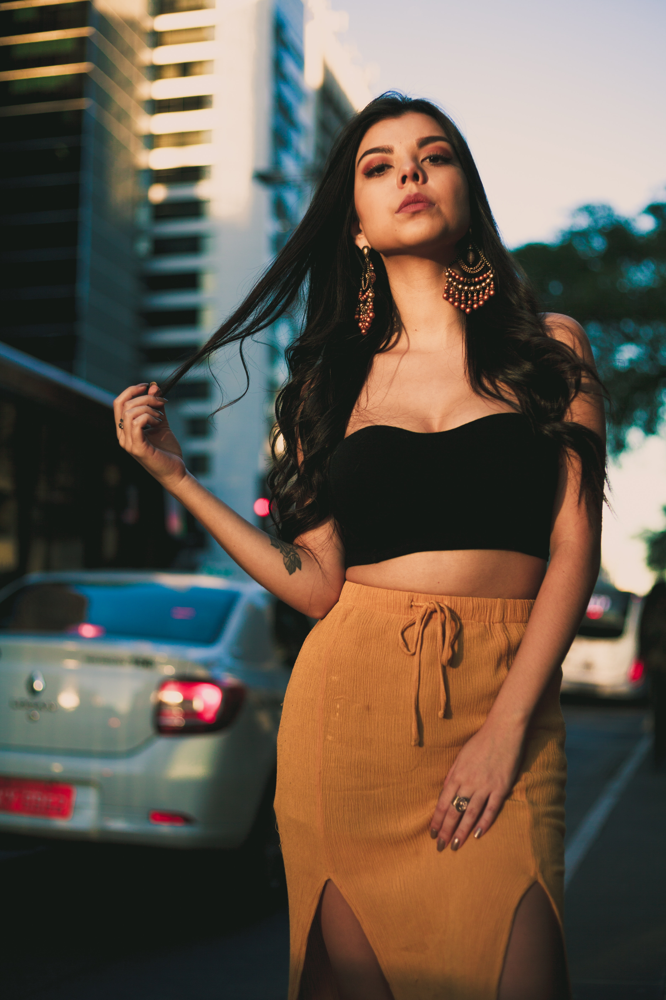
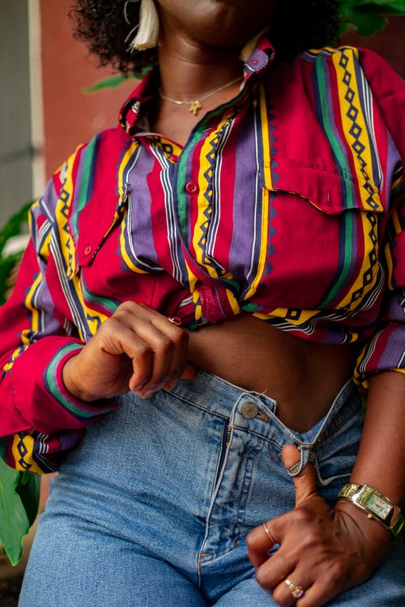

Generosamente banhada por luz solar, a estação mais quente do ano está se aproximando e promete altíssimas temperaturas. E enquanto isso, a moda verão 2021 já chega garantindo uma silhueta libertadora e peças versáteis, que transitam do dia a dia à ocasiões mais arrumadas com enorme facilidade.
A moda verão 2021 cores e estampas aparece com opções para todos os gostos: das mais vívidas e intensas, às pálidas e adocicadas, passando, inclusive, pelos tons neon. A jovialidade do amarelo também continuará em alta, podendo fazer parte de looks com outras cores tão vibrantes como, resultando em um color block poderoso, ou em um monocromático enérgico, além de ser um acento alegre detalhando roupas esportivas.
Tons adocicados e calmos combinados dão o tom da estação: verde mint, lilás, coral, amarelo pálido e azul serenity são ótimas combinações, e para dar um toque vibrante de ânimo, inclua cores fortes como o rosa pink ou o verde lima, que também seguirá por um caminho protagonista durante a moda verão 2021.
Quer dicas de moda feminina para o mês mais esperado e quente do ano? Então confira alguns de nossos looks cheios de atitude e cores que te permitem montar looks lindos no armário – combinando entre si ou com o que você já tem no guarda-roupa!